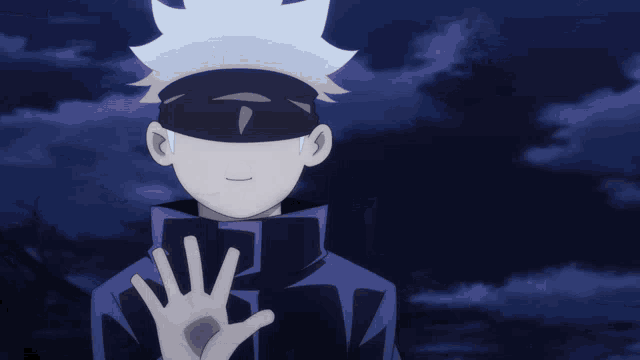
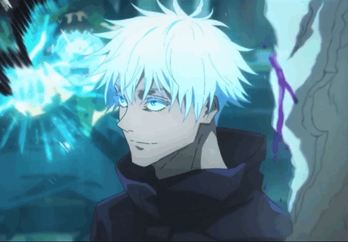
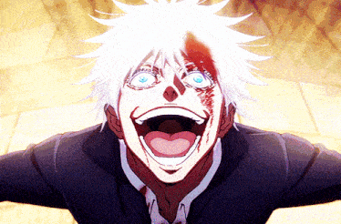
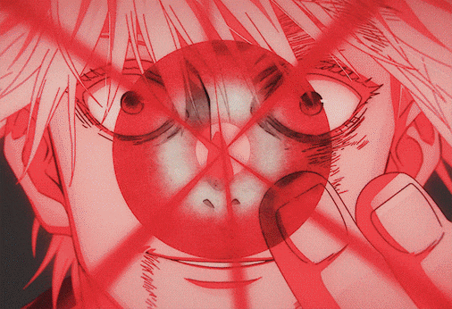
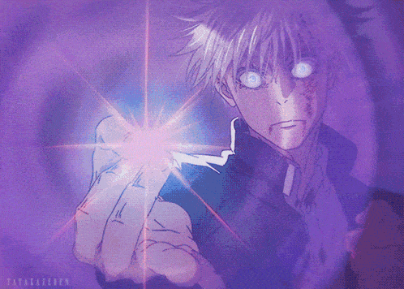
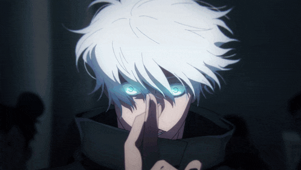

Способности「能力」
Безграничность「無下限」
Способен управлять самим пространством на атомарном уровне. У Годжо уникальная способность для обороны: любая вещь, которая приближается к Сатору, замедляется и никогда не достигает цели.
Бесконечность「無限」
Вариация безграничности, своего рода барьер, препятствующий любому контакту с заклинателем посредством проявления "бесконечности" в реальности.
Шесть глаз「六つの目」
Они играют определенную роль в точном использовании Безграничности. Юта заявил, что при активации "Шесть глаз" Сатору может снизить потребление проклятой энергии практически до нуля, и в результате у него никогда не закончится проклятая энергия в бою. В значительной степени подразумевается, что "Шесть глаз" позволяют пользователю воспринимать мир с точки зрения массы, скорости, энергии и так далее наряду с другими эффектами.
Синий「蒼」

Сатору создает центр гравитации в определенном пространстве, способный притягивать всю материю, разрушая ее без особых усилий, подобно черной дыре. Он также может перемещать точку притяжения по своему желанию, значительно увеличивая ее разрушительные возможности.
Красный「赫」
Будучи инверсией синего, красный имеет противоположный эффект. Используя свою обратную проклятую технику, чтобы инвертировать свойства синего, Сатору активирует дивергенцию своей бесконечности и создает чрезвычайно мощную силу отталкивания, отталкивающую всю материю поблизости. Будучи способностью, которая питается положительной энергией и формируется как обратная проклятая техника, эта способность обладает в два раза большей разрушительной способностью, чем синий.
Пурпурный「茈」
Передовая техника, которая сочетает в себе прямое и обратное вращение Безграничности, в результате чего создается воображаемая масса, которая запускается в цель
Расширение территории「領土の拡大」
Необъятная бездна「無量空処」
Расширение территории Сатору. Оно создает метафизическое пространство, которое заставляет жертву бесконечно получать всевозможную информацию, ограничивая их мыслительные процессы и действия. С точки зрения грубой силы, территория Сатору равна владению Сукуны Демоническая гробница внутри, уступая только из-за открытой территории Сукуны, что позволило Сукуне разрушить барьер Необъятной Бездны. Умение Сатору расширять свою территорию настолько велико, что он может точно контролировать дальность и время её активации всего на 0,2 секунды, ограничивая её длительное воздействие на тех, кого затянуло в его территорию, и может свободно изменять условия действия барьера Необъятной Бездны. Те, с кем он вступает в физический контакт, также невосприимчивы к её воздействию.